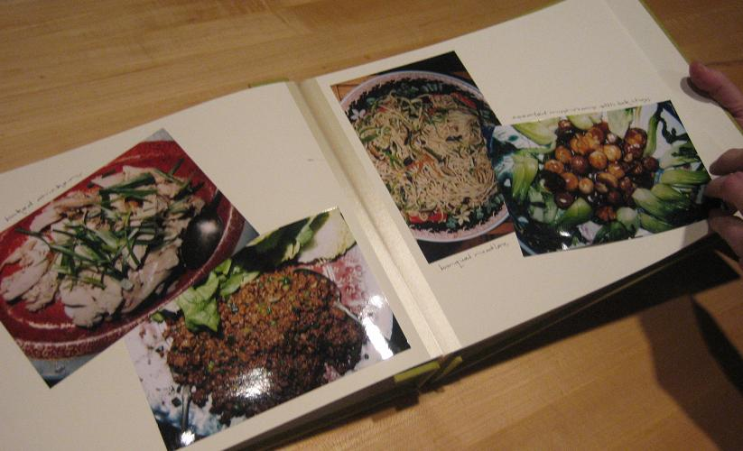

Vol. 12 No. 1, October 2006
Vol. 12 No. 1, October 2006 | ||||
To varying degrees leisure entails information seeking and use. As the weekend or any window of free time approaches, there may be a need to discover what, when, and where leisure opportunities are available. Information is especially critical to serious leisure, the
...systematic pursuit of an... activity that participants find so substantial and interesting that, in the typical case, they launch themselves on a leisure career centered on acquiring and expressing its special skills, knowledge, and experience. (Stebbins 1998: 3)
In one type of serious leisure, the making and tinkering hobbies (Stebbins 1998: 54-57), enthusiasts acquire specialized creative and technical abilities and follow often complicated instructions to produce a durable end-product, such as a model aircraft, personal Website, herb garden, or collage. This paper explores one making and tinkering hobby, gourmet cooking, as a context for information phenomena.
The hobby of gourmet cooking is defined as the skilful preparation of high quality or exotic foods during free time and for pleasure (Wilson 2003). It is one of the most popular hobbies in the United States and has several million participants, sometimes called gourmets or foodies. Gourmet cooking is rooted in the culinary traditions of French haute cuisine as championed in the 1970s by American chef Julia Child (Levenstein 1993).
Given its rich history and technical emphasis on skilful preparation, a huge multimedia culinary information market serves this community with resources such as print cookbooks, culinary serials, television cooking shows, and Websites with recipe databases.
Like any social world (Strauss 1978; Unruh 1979, 1980) coalesced around a shared interest, the hobby of gourmet cooking exhibits a central activity, namely: cooking. Typically, it occurs in the cook's residence, near the necessary tools, ingredients, and materials. This paper reports on two information phenomena within the gourmet cooking process: information activities and information resources. Information activities are the partly mental processes that manifest in the physical manipulation of information (Hektor 2001: 80), for instance, designing a dinner menu, making a food shopping list, or watching a television cooking programme. Information resources are the artefacts that communicate meaning about cooking, such as recipes, menus, cookbooks, and conversations.
Employing a pragmatic (Sundin and Johannisson 2005) or task augmentation (Järvelin and Ingwersen 2004) approach, characteristics of the central activity (cooking) are related to information activities and information resources. The overall goal is to begin to illuminate the nature and role of information within serious leisure.
Leisure has been conceptualized in two theoretical models of everyday life information seeking. Savolainen (1995) identifies pleasantries, interests, and hobbies as factors in a way of life sustained through information seeking. Hektor (2001) models everyday life as an information use environment with seven general categories of experience, including reflection and recreation; therein, leisure projects can manifest eight different information activities. These high level conceptualizations verify the complex interplay of everyday life, leisure, and information phenomena, while not aiming to profile any specific leisure activity.
Within everyday life information seeking scholarship, a handful of case studies of leisure capture the character and diversity of information phenomena; highlights are noted here. Pleasure readers (Ross 1999) discover insights or resolve problems without formulating questions, challenging the notion that information seeking is couched in a mode of uncertainty and is preceded by a query. In genealogy and family history (Yakel 2004) the search for information about ancestors is a profound experience that brings coherence to one's life: unlike most information seeking situations, it is an exercise with no end. Believers in the paranormal (Kari 2001) find other-worldy information sources to be helpful; extending the sense of what qualifies as information. Bird watching is an outdoor activity reliant upon field guides, yet the bulk, organization, and pictoral styles of these reference sources can hinder, rather than facilitate, success (Law and Lynch 1988: 292-297).
These case studies provide detailed descriptions of information phenomena within leisure realms, and offer counterpoints to information seeking studies of academic or professional contexts. As reminders of the great diversity of leisure, they altogether suggest the futility of a generic model of leisure information seeking and use. Rather, an appropriate approach is to focus on the central activity and its information phenomena. The work that follows contributes to this research area as the first case study of a craft or making and tinkering hobby.
A scientific ethnography (Sandstrom and Sandstrom 1995) was undertaken to explore the information activities, resources, and spaces in the hobby of gourmet cooking from the vantage point of the home. Twenty gourmet hobby cooks from Los Angeles, California and Boston, Massachusetts participated in the study during summer 2002 and Winter 2005. Subjects were encountered at cookbook signings and public culinary lectures, screened as active in the hobby, and recruited through purposive and snowball sampling. As exploratory research, no effort was made to represent socio-demographic variables in the sample and the main criteria was a passion for gourmet cooking.
Fieldwork occurred in the gourmet cook's residence, the nexus of the activity. There, a semi-structured (Spradley 1979) sixty-minute interview explored the life-context of the hobby, its routines, and informational elements (see Appendix A: Interview schedule); interviews were tape-recorded and transcribed. Then, the gourmet cook brought the researcher through their household, describing the site of cooking, with attention to culinary information resources. The setting and its artefacts were documented by a photographic inventory (Collier and Collier 1986; Hartel 2006; see Appendix B: Shooting guide). The resulting digital images were captioned and the cook's commentary was transcribed. In addition to the fieldwork, secondary research into popular culinary literature and seminal gourmet cookbooks provided background and checked the veracity of the accounts of the hobbyists.
Interview transcripts and field notes were studied for themes through an iterative process of inductive and deductive analysis. A visual analysis process was performed on the photographs to produce qualitative and quantitative descriptions of the information resources and spaces. Ultimately, there was no formula for integrating all the data into final conclusions, which was necessarily a creative leap.
The central activity in the hobby of gourmet cooking is here called an episode: a hands-on cooking project with numerous sub-tasks that generates an edible outcome. Participants in this study provided accounts of the episodes in Table 1. An episode can last just a few minutes for a simple and singular preparation, such as swiss chard. Or, it may take the form of a menu or event (i.e. a Halloween party) with multiple food elements, requiring several days of effort. While most of the episodes in Table 1 are festive, it is likely the majority in everyday life are more mundane. Cooks prepare the same foodstuff many times with satisfaction and each time is a distinct episode. A hobbyist in this study says, “There are certain things I cook over and over again. They are often simple things.” Repeated episodes of the same food items become a hobbyist's signature repertoire.
| A dessert party. A Thai-themed dinner party. Rolled-stuffed flank steak. A Spanish-style New Year's meal. Traditional Coq au Vin (rooster stewed in red wine). Meat and potato hash (from leftovers). Swiss chard. Vegetable terrine. Corned beef (from scratch). A Christmas party with antipasto platter. |
Home-made Chinese dumplings. A lobster dinner on New Year's Eve. A Halloween party. A four-course seafood dinner. A Southern barbecue. Chinese soup of smoked duck and meatballs. Toile (thin, malleable cookies). A 4th of July barbecue. A French –themed dinner party. A 3-course birthday meal. |
While subjects conceived of the episode as a whole, analysis illuminates how gourmet cooking follows a common and logical nine-step process, illustrated in Figure 1. Reflecting this inherent structure, one hobbyist notes that cooking has a logical order,
There is a natural sequence of events in cooking, regardless of what you are preparing. It starts in a pan, for instance, and then moves to a plate. When you get good at cooking you develop an instinct for this sequence...
The editor of Cook's Illustrated expresses the same idea more poetically,
I have found nothing clearer in objective or intent than the execution of a recipe, a lockstep of beginnings and endings... This imparts purpose and clarity, delivering blessed structure to the tumble of hours during a long Saturday afternoon. (Kimball 1999: 1)
The backdrop for an episode is the hobbyist's simmering desire to practice cooking. This leads to the first step of exploring, which is a quest for inspiration, not information. It may take the form of culinary day-dreaming, or browsing cookbooks, Websites, magazines, or personal recipe files. A hobbyist reflects, So, I flipped through my various magazines and cookbooks... what did I want to make? This voyeuristic browsing of cookbooks has been coined food porn (O'Neill 2003). Other ways to explore are to visit markets, examine restaurant menus or ask others what they want to eat. The end result of this step is a vision for the forthcoming cooking episode, such as lasagna or apple pie; or as a theme idea like Indian appetizers.
Once the episode is defined as a concept, a variety of planning activities commence. A critical matter is to acquire the right recipe(s). Information practice takes the form of directed seeking or searching through personal recipe collections and cookbooks. Hobbyists also use culinary Websites with recipe databases such as epicurious.com or foodtv.com. As one cook puts it, I began conducting research through recipes. I went on the Internet and through some of my cookbooks... It is common for cooks to seek multiple versions of the same recipe, which are analysed and compared. A cook reports,
There are very few things I will cook without reading at least three recipes. I'll go through ten cookbooks – even if I have cooked it a dozen times. There is something intriguing to me about the various approaches... then I usually borrow and pick from different ones.
Sometimes the best features of several recipes are amalgamated in a customized, original recipe. The chosen recipe(s) or menu determines what ingredients and tools are needed; and a shopping list is produced. For elaborate episodes, a hybrid menu cum action plan or timeline is written (see Figure 2).
Next, in provisioning the necessary ingredients or tools are obtained. Hobby cooks procure materials from their own kitchens or gardens; and as needed shop in grocery stores or specialty markets. They regularly go to great lengths to get exactly the right items, as one cook explains:
Coq au Vin requires a rooster. That is an old bird. You don't just go to the grocery store and ask for a rooster! This became a challenge. I called around to poultry shops and approached the vendors at the farmers' market... [eventually I went to] Chinatown.
Once materials are gathered, prepping or preparatory work is the act of making ingredients ready to cook; it usually involves measuring and manipulating ingredients or equipment. Activity shifts to the kitchen and the implementation of recipes. The interviewees mentioned preparatory work of cleaning fish, marinating meat, and forming hamburger patties. Hobby cooks are purists who enjoy such labour. One says, I try not to use anything processed. If I need bread crumbs, I make them from bread. I don't buy the processed or convenience stuff. I don't take the shortcuts. 'Prepping' can be seen on a recipe next to the list of foodstuffs, as highlighted below in italics in a soup recipe:
1 medium onion, thinly sliced
¾lb potatoes, peeled, quartered lengthwise, and cut into ½-inch cubes
1 lb fresh white beans in pods, shelled
Assembling is the process of combining ingredients prior to cooking. On a recipe, assembling is usually addressed in the imperative mood following the list of ingredients, as shown in italics in a lasagna recipe:
Spoon 11/3 cups sauce over bottom of 13 x 9 x 2-inch glass baking dish. Place 3 noodles over sauce. Drop half of ricotta cheese mixture by tablespoonfuls evenly over. Top with half of basil leaves...
In some cases, assembling may produce a finished food product, as one cook succinctly reports, I assembled a very simple salad with salad dressing.
Next, cooking entails the addition of heat to food and improves its safety, texture, and flavor. Cooking can be simple, as in simmering a stew or require complex orchestration, such as, I browned the hens in olive oil. Then I heated the marinade and simmered the hens in it. Finally, I finished it in the oven. This dried out the skin, but the inside was really juicy.
Serving is the act of placing food in front of someone. Its style can vary depending on the foodstuff or cuisine, whether formal or informal. For hobby cooks, serving is an aesthetic accomplishment. One cook remarks, I think food presentation is important. Even the meals I prepare for dinner at night, I attempt to make attractive. Partly for this reason, cooks value photographs in their cookbooks. Serving (not eating) is often seen as the culmination of the episode, for instance, The cheesecake was finished with glazed strawberries on top and brushed with strawberry jelly... It was beautiful. It just sat gloriously on top of the table!
Surprisingly, hobby cooks had little to say about the step of eating, despite their passion for food. Greater import was placed on other people consuming their work, as in, ….[after the meal] my friend had a massive amount of smiles. She loved it. Eating is required, though, to evaluate the success of the effort, a serious concern.
In evaluating the cook reflects on and assesses the results. Points of reference may be the description from the recipe or cookbook, previous implementations, or experiences at restaurants. During evaluation, the cook may request feedback from others, I am very interested whether people like something. I quiz them. Some cooks systematically record their impressions by annotating recipes or keeping a culinary journal, as shown in Figures 3 and 4.
|  |  |
After evaluation, the hobbyist has come full circle; they are poised to imagine their next episode through exploring. The steps above may not apply exactly for all hobby cooking experiences, but map roughly to the vast majority.
This account of the episode illustrates how information activities and resources are instrumental to gourmet food production, and are interwoven and varied across the process. The episode serves as a framework to more precisely locate and relate information activities and resources, as plotted in Table 2. Because of space limitations three main observations are discussed, and a more detailed report is forthcoming in the author's dissertation.
| Step | Information activities | Information Resources |
|---|---|---|
| exploring | imagining, browsing, reading, talking, experiencing | recipes, cookbooks, menus, serials, reference sources, Webpages, culinary databases, homemade compilations, people/conversations |
| planning | seeking, searching, comparing, producing (planning documents) | recipes, cookbooks, menus, serials, reference sources, Webpages, culinary databases, homemade compilations, lists, time-lines/schedules |
| provisioning | seeking, searching, use (re-use) | recipes, promotional and sales materials, lists |
| prepping | use (re-use) | recipes, cookbooks, serials, reference sources, timelines/schedules |
| assembling | use (re-use) | recipes, cookbooks, serials, reference sources, timelines/schedules |
| cooking | use (re-use) | recipes, cookbooks, serials, reference sources, timelines/schedules |
| serving | use (re-use) | recipes, cookbooks, serials, reference sources, timelines/schedules |
| eating | non-use, talking | [the senses] |
| evaluating | use (re-use), recording, talking | recipes, culinary records and journals, people/conversations |
1. The use and re-use of culinary documents is the prevailing information practice. Traditionally, studies of information behaviour are centered on information seeking and searching. This perspective does not capture the nature of information phenomena in this culinary hobby. Here, seeking and searching are critical for acquiring recipes or provisions, but relatively minor events in the project as a whole. The predominant information practice is use, which is not well-studied (Vakkari 1997: 461-462; Savolainen 2000: 36). In this context use entails consulting an information resource to determine the next proper action, as in checking a shopping list, timeline, or recipe. The act of use is quick and deductive, unlike the more contemplative use of documents by scholars. In reality, re-use may be a better term, for typically the cook is engaging information that has been considered already, or in previous episodes.
2. The gourmet cook is an active producer and manager of information resources. Across the episode, information produced by the hobbyist play a significant role. This is especially the case during planning, when the cook generates original recipes, menus, timelines, or action plans to keep the enterprise on track. Gourmet cooks also create records to memorialize the episode, such as journals or diaries with descriptive text, a ranking system, and pictures. Given the time investment in these artefacts, and propensity for re-use, they are typically saved. As such documents accumulate, the cook becomes the manager of a substantial document collection.
3. Recipes are the principle information resources of gourmet cooking. While more than a dozen different culinary information resources are instrumental to gourmet cooking, the recipe, a set of instructions for preparing food (Tomlinson 1986: 203), is primary. It functions foremost in all steps, except one (eating). The recipe is a very complex document. It is multipurpose (both steers and memorializes) and malleable (subject to editing and amalgamation). According to Tomlinson (1986: 203-205) recipes are multi-layered and always incomplete; they depend upon the cook's prior knowledge and usually necessitate other resources. As an artefact, the recipe can be a free-standing document or be embedded within the other genres of cooking, namely: cookbooks, serials, Web pages, or culinary databases. Overall, the landscape of information resources in gourmet cooking resembles a dynamic, layered Web that is centered on the recipe.
Reflecting on prior scholarship, gourmet cooking fits as an element of Savolainen's (1995) way of life; and as an example of Hektor's (2001) recreation project; hence the episode can be used to deepen these holistic models of everyday life information seeking. The expertise, wherewithal, and informational acuity exhibited by gourmet cooks resemble counterparts in pleasure reading, family history, paranormal enthusiasm, and bird watching. However, more systematic research is needed on the central activity of each hobby and its related information phenomena to draw meaningful similarities and differences across hobby types.
This paper reports discoveries from an ethnography of information phenomena in the hobby of gourmet cooking. Taking a pragmatic or task augmentation perspective, the central activity, cooking, was cast as a context to locate and relate information activities and resources. Gourmet cooking unfolds as an episode with nine distinct yet concatenated steps. Within this process information activities and resources are instrumental, interwoven, and varied. In any cooking episode use and re-use are the prevailing information activities; the hobbyist is an active producer of information; and the recipe is a primary document. Forthcoming research will provide greater detail about information phenomena in the episode of gourmet cooking. This work demonstrates one way to conceptualize information phenomena in everyday life, and begins to shed light on the nature of information in serious leisure.
The paper benefited from the thoughtful feedback of its anonymous reviewers.
| Find other papers on this subject | ||
1. The career of the hobby cook. (Estimated 10 minutes).
Please tell the story of your experience as a hobby cook, beginning with your earliest memories of interest in cooking, covering any turning points, and ending with your present participation.
2. A recent cooking project. (Estimated 15 minutes.)
Please tell me about something you've cooked recently, beginning with your decision to cook and then covering every step taken until you eat the food. Your reflections on the experience afterwards are also welcomed.
3. Information activities (estimated 25 minutes)
A. What do you do to stay informed about cooking?
B. Please describe, in general or with specific examples, how you do the following:
* these phrases may change as more is learned about information activities in the hobby
4. Information resources (estimated 25 minutes)
A. What are your main information resources for cooking?
B. Informant completes a worksheet that lists a wide variety of information resources. When completed, the researcher asks the interviewee to comment upon the features and use of each resource.
[A shooting guide provides structure to visual research in the home, and allows systematic comparison between cases/sites.]
The hobby cook provides a tour of their home and culinary information resources. The tour is launched after the interview with the statement, I'd like you to take me through your home, showing me the locations and resources used in the hobby. In particular, please show me the culinary information resources here in the house. Let's start in the kitchen.
The hobby cook will be given the hand-held tape recorder and asked to speak clearly into the microphone as they lead the tour. When a particularly interesting entity is encountered, an object probe (DeLeon and Cohen 2005) such as 'What is this?' or 'Tell me more about this...' or 'How does this work?' is used.
15-20 photographs are taken on three levels:
Rooms: The major rooms used in the hobby will be identified. It is likely this will include kitchens, dining rooms, home offices, living rooms, storage spaces, patios.
Collections and zones: The material information resources of the hobby will be investigated. It is anticipated this will consist of volumes of cookbooks and recipes in various forms. Following Lee, this may include collections, 'a group of documents, regardless of format, medium, and ownership' (Lee 2003: 422).
Items: These may be hand-made assemblages of recipes, recipe kits, surfaces of information (i.e., bulletin boards, refrigerators with recipes), journals, and so on.
© the author, 2006. Last updated: 12 September, 2006 |
|